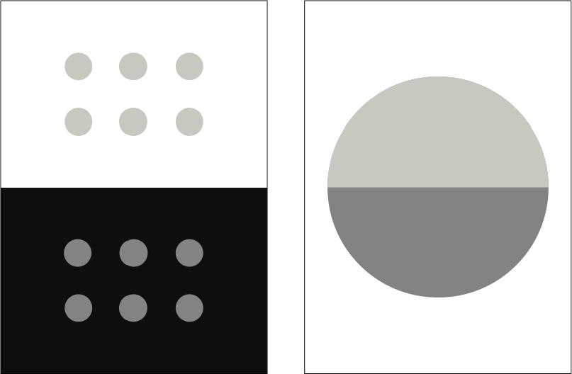
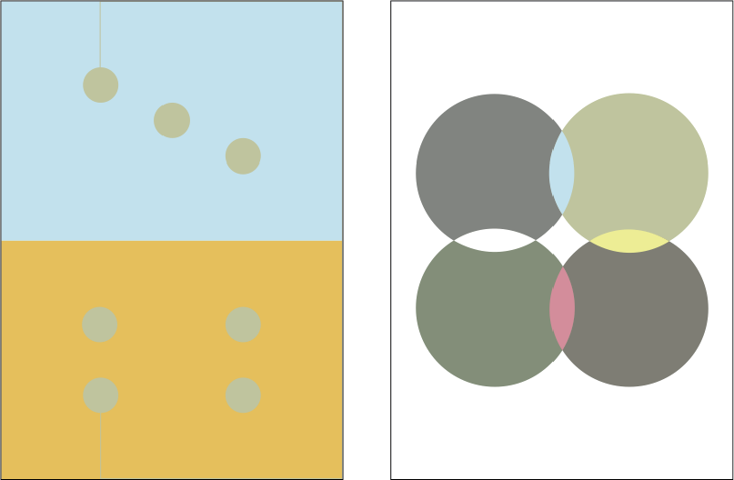

Houseflies
Adobe After Effects, 2014
Animation in which a single geometric shape conveys motion and behavior.


UI/UX for Elffe
Adobe Illustrator and Webflow, 2015
Working as experience and visual designer alongside a Finnish team of business and code developers at Aalto University's 'Summer of Startups' startup incubator program in Finland.
Elffe as a service and company is about activating and engaging senior citizens within their community through younger 'Elffe' helpers. Elffe's website needs to convey trust, incentive, and credibility, because it serves as a service introduction and a call to action for a loved one to order an Elffe for a senior in their life.

The website's use of real rather than stock visual and textual narrative emphasizes atuthenticity and trust. All content is by Elffe, of Elffe. The website documents narratives from and for all users involved: the senior service receiver, the young Elffe service provider, and the loved one ordering the service.
Credibility is achieved by citing quotes, a consistent and recognizable brand image, and assigning Elffes with affiliations and seals of approval within their community.


Spring Issue
Adobe Illustrator, 2014
Cover art and layout for the Undergraduate Research Journal of Psychology. This issue marks the launch of this Berkeley Journal at UCLA. It was an opportunity to rebrand and lay out the Journal to resemble a magazine to be consumed by a student audience.


Map of Octavia
Adobe Illustrator, 2013
Inspired by Italo Calvino's book of Invisible Cities and interpreted to visually experience one of Calvino's descriptive short stories. Techniques explored include spacial perception, stroke weight, and text as texture.

Deck of Cards
Adobe Illustrator, 2012
Playing cards that explore the theories, interaction, and illusions of color.

Player is unaware of true and differing subtle color play until reaching card values of 'One': above right and 'Joker': below right.


Changing Faces
Processing, 2013
A drawing from Bruno Mari's collection of faces is translated to code and manipulated to be interactive. The objective is to parameterize the original face so it can depict a range of emotions when the user moves their cursor from left to right.

Sway
Adobe Illustrator and CSS, 2015
Concept and design work for an LA Hacks (UCLA Hackathon) 2015 project, working alongside code developer during the event.

Sway is an online platform to create and share real-time playlists in a crowdsourced manner, giving musical control to the listeners. User accessibility and participation are integral; music plays from a single DJ's device but can be interacted with from any Listener's individual devices. Listeners can both sway to the crowd generated music and also sway song order by engaging in positive feedback with upvotes.

DJ ID's are generated with no need for a personal Sway account, thus removing barriers for quick playlist creation and sharing. Users with knowledge of this ID can access and add songs to the playlist, assuring that only those listening will contribute. A playlist is accessed from any Listener's individual device in order to minimize hassle from constant song requests on one device.


FriendsWithYou MOCA
Adobe Illustrator, 2014
Concept wild posting guerilla campaign for LA MOCA book launch of design group FriendsWithYou.
Posters explore how content hierarchy and typography can communicate information in a loud, urban environment.

UX Redesign for iOS
Adobe Illustrator, 2014
Concept work redesigning the user experience of an iPhone, focusing on shortcuts and quick access to content important to the specific user.

The first home screen functions as an app notification feed. Notifications with relevant actions open on this screen to prevent constant switching and loading between apps. Swiping this screen opens the next, which has frequently used Settings functions and holds the user's downloaded apps. The user can select four favorite apps that exist pre-loaded on the next four swipable screens, allowing quick access and switching between frequently used apps.


UI/UX for Vivgo
Adobe Illustrator, 2015
User experience and visual design from concept to launch of social travel mobile application, working as part of the Vivgo team with business and code developers. Vivgo engages travelers with real-time access to experiences (hosted events and activities) in a place unfamiliar to the user.
Bottom bar navigation provides quick access to three important functions for a traveling user: a profile page from which the user finds events they have signed up for or marked of interest, a feed for finding on-demand new events, and a chat function for in-app communication with hosts and traveling users.


Events are visualized in scrollable list and map format for spatial context, and are filtered by the user based on what is most important to them.
Users can access event profiles and host profiles that provide information and reviews for credibility, as well as their own and other traveling users' profiles that document and share past and upcoming events.


UI/UX Redesign for Darling Magazine
Adobe Illustrator, 2014
Concept work, class assignment proposal for redesign of UI and UX of Darling Magazine's website and mobile view.

Darling Magazine's existing website clutters its content and focuses too heavily on pushing its users to subscribe.
Redesign explores user engagement opportunities of single-page layouts with no scroll.
Darling Magazine's landing page is redesigned to clearly display and separate the brand's two main products: monthly print magazine and online content. A welcoming message introduces the user to Darling Magazine's main idea and philosphy, before putting more content in front of the user.


Darling Magazine's existing mobile landing page provides little incentive to consume or subscribe. A redesign reminds new and old users of Darling Magazine's message, while serving as quick navigation to the company's two main online channels.

Example of existing online blog content page with stacked, scrolling grid:

Redesign utilizes navigation and grid changes that allow users to keep track of their consumed articles in terms of date published and content category. Blog page's redesigned layout and visual style can better communicate and tie in Darling Print Magazine's unique aesthetic with carefully photographed article thumbnails and thoughtfully gridded typography with ample white space.


System of starred content suggests online user logins and possibilities for user engagement beyond email and print subscriptions.
Redesigned buttons and colors aim to maintain Darling's blog-like feel while providing clear and unique navigation:


We Are FriendsWithYou
Adobe InDesign, 2014
Layout design for book of works by design group FriendsWithYou.
Typography and grid systems are created to communicate information hierarchy and content type to the reader. Font weights and sizes are used to explore text as texture.


Bnw
Photography, 2014
Trees
Photography, 2013
Dora Parnanen
Student of Design Media Arts at the University of California, Los Angeles.
Education
University of California, Los Angeles
BA in Design Media Arts, 2016
Freestlye Academy of Communication Arts and Technology
Film, English, and Design
Technical Skills
Illustrator
InDesign
HTML, CSS, JavaScript
Photoshop
Final Cut Pro
After Effects
Experience
Bruin Advertising Team
Fall 2015 - current (Los Angeles, CA)
Conducting user and marker research, persona creation, street interviews, and leading focus groups as part of the Strategic Planning Committee presented with a company's case study.
La Hacks
Spring 2015 - current (Los Angeles, CA)
Redesigning UCLA's Hackathon branding, website, and structure to be an experience that focuses on inclusivity, learning, and community.
Elffe @ Aalto University's Summer of Startups
Spring 2015 - Summer 2015 (Helsinki, Finland)
Working alongside business and code developers as Designer on the Elffe Team, creating a website and brand identity that conveys the company's values of community engagement and credibility.
Vivgo
Winter 2014 - Spring 2015 (Los Angeles, CA)
Lead experience and visual designer at a social travel startup, creating a mobile application and brand image from concept to launch.
Idean
Summer 2014 and Summer 2015 (Palo Alto, CA)
Working as a User Experience Design Intern on projects for and with clients from concept ideation and research phase to application of visual style.
The Influence
Spring 2014 (Los Angeles, CA)
Helping launch a celebrity street style website, gathering and editing content.
VividWorks @ Dwell On Design Expo and WestEdge Design Fair
2012, 2013, 2014, and 2015 (Los Angeles, CA)
In charge of competition booth on trade show floor, demonstrating VividWorks 3D augmented-reality software to potential partners and clients.
The Cooking Tree
Fall 2011 to Summer 2012 (Los Altos, CA)
Video production intern for internet-based cooking series, working in all aspects of prodution including lighting, audio, and editing. End project was full control of directing and producing a series episode.
Finnish Language School of Silicon Valley
2008 to 2012 (Sunnyvale, CA)
Teaching Finnish language and communication skills to groups of elementary aged students.
Luoda Production Oy.
Summer 2011 (Helsinki, Finland)
Working as a production intern on set to help film and produce a promo video for a Finnish startup company.
Find me at
ddorasofia@gmail.com
Additional portfolio content available upon request.